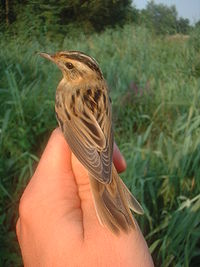
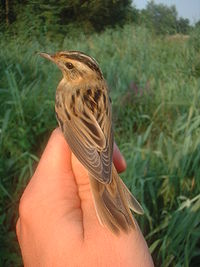

| Aquatic Warbler | |
|---|---|
|  | |
| Conservation status | |
| Binomial name | |
| Acrocephalus paludicola (Vieillot, 1817) |
| Aquatic Warbler | |
|---|---|
|  | |
| Conservation status | |
| Binomial name | |
| Acrocephalus paludicola (Vieillot, 1817) |
The Aquatic Warbler, Acrocephalus paludicola, is an Old World warbler in the genus Acrocephalus. It breeds in temperate eastern Europe and western Asia, with an estimated population of 15,000 pairs. It is migratory, wintering in west Africa. After many years of uncertainty, the wintering grounds of much of the European population were finally discovered in Djoudj National Bird Sanctuary, Senegal , with between 5-10,000 birds present at this single site[1]. Its south-westerly migration route means that it is regular on passage as far west as Great Britain.
This small passerine bird is a species found in wet sedge beds with vegetation shorter than 30 cm. Drainage has meant that this species has declined, and its stronghold is now the Polesie region of south Belarus, where 70% of the world's population breeds. 3-5 eggs are laid in a nest in low vegetation. This species is highly promiscuous, with most males and females having offspring with multiple partners (Leisler & Wink 2000).
This is a medium-sized warbler. The adult has a heavily streaked brown back and pale underparts with variable streaking. The forehead is flattened, there is a prominent whitish supercilium and crown stripe and the bill is strong and pointed.
It can be confused with juvenile Sedge Warbler, which may show a crown stripe, but the marking is stronger in this species, which appears paler and spiky-tailed in flight. The sexes are identical, as with most warblers, but young birds are unstreaked on the breast below. Like most warblers, it is insectivorous, but will take other small food items including berries.
The song is a fast, chattering ja-ja-ja punctuated with typically acrocephaline whistles.

{kind=link}